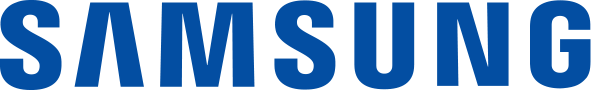
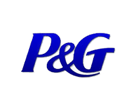
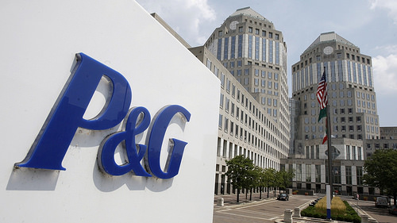
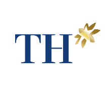
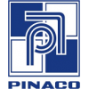

Samsung Việt Nam

Thành lập từ năm 1938, Samsung là tập đoàn hàng đầu thế giới trong lĩnh vực kinh doanh thiết bị công nghệ. Ngay khi đặt chân vào Việt Nam vào năm 1994, Samsung đã đánh giá Việt Nam là thị trường tiềm năng khi gia nhập AFTA và có lộ trình đàm phán WTO nên đã định hướng đầu tư lâu dài. Đến nay, Samsung có 3 nhà máy được xây dựng ở Việt Nam, mang lại doanh thu 436,293 nghìn tỷ đồng từ 2009 đến 2012 và đóng góp khoảng 17% kim ngạch xuất khẩu của cả nước trong năm 2013.
Để quản lý hệ thống phân phối phức tạp ở thị trường Việt Nam, Samsung đã lựa chọn DMSpro. Với giải pháp quản lý tập trung trên nền tảng công nghệ Cloud DMS, Kết quả đang được triển khai với DMSpro:
P&G Việt Nam

P&G là một trong một trong những tập đoàn sản xuất hàng tiêu dùng hàng đầu thế giới với các thương hiệu trị giá đến 26 tỷ Đôla. Tại Việt Nam, P&G đang dẩn đầu thị trường trong các ngành sản phẩm: chăm sóc cá nhân, chăm sóc nhà cửa và giặt tẩy, chăm sóc sắc đẹp, chăm sóc em bé.

P&G đã triển khai giải pháp Solomon cho toàn kênh thương mại chung ở Việt Nam, gồm khoảng 20 nhà phân phối trên cả nước. DMSpro đảm nhiệm một cách trơn tru công việc bảo trì và hỗ trợ hệ thống cho người dùng Solomon từ 2012, không để xảy ra bất kỳ lỗi hay ảnh hưởng gì cho hoạt động kinh doanh. Hơn thế nữa, DMSpro đã từng hỗ trợ P&G Việt Nam trong nhiều dự án khác nhằm mang lại tính minh bạch cho hoạt động bên dưới của chuỗi cung ứng: theo dõi hoạt động bán hàng/cung ứng của tất các nhà phân phối, theo dõi hoạt động của nhân viên bán hàng tại thị trường, đo lường các chỉ số đánh giá thực hiện công việc của các nhân viên bán hàng của tất cả nhà phân phối… Đặc biệt, giải pháp AiM trong gói giải pháp DMS được lựa chọn để triển khai trong toàn bộ hệ thống của P&G tại Đông Nam Á để giảm khối lượng công việc cho nhân viên bán hàng trong việc nhận đơn hàng, các công việc giấy tờ khác. Sáng kiến này đã giúp P&G có nhiều lợi thế cạnh tranh trên thị trường.
Công ty dược phẩm Nhất Nhất
Công Ty TNHH Dược Phẩm Nhất Nhất là Công ty dược phẩm cổ truyền lớn ở Việt Nam, Nhất Nhất hoạt động với sứ mệnh: sưu tầm, nghiên cứu, sản xuất quy mô lớn, quảng bá rộng rãi, đưa ra thị trường các bài thuốc gia truyền hiệu quả nhất Việt Nam, các thuốc đông y thế hệ 2 (mà các nước Âu, Mỹ, Nhật Hàn đã và đang đầu tư rất nhiều công sức, tiền của để nghiên cứu): chuyên trị các bệnh nặng - cạnh tranh hiệu quả với tân dược (đặc biệt trong điều trị bệnh mạn tính) – ít tác dụng phụ hơn hóa dược.
Thuốc đông y thế hệ 2 của Nhất Nhất cũng hiệu quả vượt trội so với các sản phẩm thảo dược của Âu, Mỹ, Nhật Hàn, TQ và vì vậy tiềm năng xuất khẩu ra khắp thế giới là rất lớn. Trong tương lai Nhất Nhất có thể trở thành công ty đa quốc gia duy nhất mà Việt Nam có.
Kết quả đang được triển khai với DMSpro:
Tập đoàn nước giải khát Tân Hiệp Phát
Được thành lập năm 1994, tập đoàn THP đã trở thành nhà sản xuất nước giải khát hàng đầu Việt Nam trong 3 lĩnh vực kinh doanh chính: thức uống, thực phẩm ăn liền, bao bì. Luôn đi tiên phong trong ngành thức uống đóng chai có lợi cho sức khỏe, Tân Hiệp Phát đã trở thành một trong những tập đoàn lớn nhất Việt Nam với doanh thu tăng trưởng hàng năm cao nhất.
Qua đánh giá về hệ thống quản trị nguồn lựcMicrosoft Dynamics theo mô hình phân tán, THP nhận thấy vấn đề về tính chính xác của dữ liệu và hiển thị thời gian thực về nhu cầu thị trường. Trong vòng 04 tháng, Công ty đã thành công trong việc triển khai 03 giải pháp: gói giải pháp DMS, gói AiM (giải pháp di động thông minh) và gói E-route đến 200 nhà phân phối ở 64 tỉnh thành, từ đó giúp hiển thị thời gian thực về tình hình thị trường, giúp việc phân tích số liệu nhanh chóng, tăng hiệu quả hoạt động và tổ chức tốt truyền đạt thông tin đến các nhà phân phối
Các kết quả chính đạt được:
"Với việc triển khai giải pháp DMS được phát triển bởi công ty DMSpro dựa trên nền tảng của Acumatica tại các trụ sở chính, hiện nay chúng tôi đã có thông tin đầy đủ về các hoạt động bán hàng hàng ngày tại thị trường và thông tin thời gian thực về trưng bày hàng hóa tại hàng ngàn cửa hàng bán lẻ trên toàn quốc. Thông qua hệ thống trực tuyến, chúng tôi cũng ngăn ngừa được việc “chế biến dữ liệu”. Hiển thị thời gian thực về tình hình kinh doanh và các dữ liệu bán hàng kịp thời hỗ trợ chúng tôi trong việc thông qua mọi quyết định – từ quyết định chiến thuật về các khuyến mãi thời vụ đến các quyết định chiến lược mở rộng độ phủ thị trường”
Tiến sĩ Trần Quí Thanh – Chủ tịch và Tổng Giám Đốc Tập đoàn nước giải khát THP
Công ty Cổ phần Chuỗi thực phẩm TH (THMilk)

Thâm nhập thị trường Việt Nam từ năm 2010, TH Milk trở thành nhà sản xuất sữa phát triển nhanh nhất với nông trạng nuôi bò sữa lớn nhất Đông Nam Á với công nghệ và dây chuyền sản xuất hàng đầu thế giới. Mới đây vào ngày 09/07/2013, công ty TH đã đưa vào hoạt động nhà máy sản xuất sữa tươi sạch áp dụng công nghệ sử dụng người máy lần đầu tiên được ứng dụng tại Việt Nam.
Quản lý hệ thống phân phối hiệu quả khắp cả nước là thách thức hàng đầu của bất cứ doanh nghiệp nào. Trong ngành sản xuất sữa, việc quản lý này lại càng khó khăn hơn do đây là sản phẩm có hạn sử dụng ngắn ngày, và thị trường cạnh tranh gay gắt. Giải pháp của DMSpro được lựa chọn dựa trên năng lực, kinh nghiệm vững chắc, khả năng linh hoạt và dịch vụ khách hàng chuyên nghiệp.
Trong vòng 6 tháng, DMSpro đã xuất sắc hoàn thành triển khai gói giải pháp DMS đến hơn 100 nhà phân phối và chi nhánh trên toàn quốc với hơn 1000 nhân viên bán hàng. Giải pháp DMS dựa trên công nghệ đám mây giúp giảm đáng kể chi phí đầu tư vào IT cho các Công ty mới được thành lập như TH Milk, giúp TH Milk tập trung vào các hoạt động cốt lõi khác.
Công ty Cố Phần Pin Ắc Qui Miền Nam (PINACO)

Công ty Cổ Phần Pin Ắc Quy Miền Nam (PINACO) được thành lập từ năm 1976, cổ phần hóa năm 2004. Sau gần 40 năm hình thành và phát triển, PINACO tự hào là doanh nghiệp hàng đầu Việt Nam trong lĩnh vực sản xuất và kinh doanh Pin - Ắc quy. Với giá trị doanh nghiệp hiện tại lên đến 10,2 triệu USD, bốn dây chuyền sản xuất, 1400 nhân viên, sản phẩm của PINACO đã chiếm lĩnh thị phần nội địa, với 50% thị trường ắc qui, 50% thị trường pin tiêu dùng, riêng thị trường pin ở miền nam Việt Nam chiếm 80%.
Một thế mạnh khác của PINACO là hệ thống phân phối trên toàn quốc gồm hơn 180 Nhà phân phối, Đại lý và các trung tâm chăm sóc khách hàng, điểm bảo hành trên cả nước, tạo điều kiện để người tiêu dùng có thể dễ dàng tìm mua sản phẩm của PINACO và nhận được sự chăm sóc, bảo hành hậu mãi chu đáo ở mọi nơi theo chính sách “Bảo hành toàn quốc” của PINACO.
Sau khi suy xét các yếu tố về độ phức tạp của kênh phân phối truyền thống và chính sách bảo hành, PINACO đã tin tưởng và lựa chọn DMSpro để triển khai giải pháp quản lý hệ thống phân phối trên toàn quốc. Về phần DMSpro, với đội ngũ kỹ sư công nghệ chuyên nghiệp, đã phát triển tốt dự án và đưa vào sử dụng thực tiễn, đánh dấu một cột mốc mới trong lĩnh vực công nghệ quản lý của DMSpro.